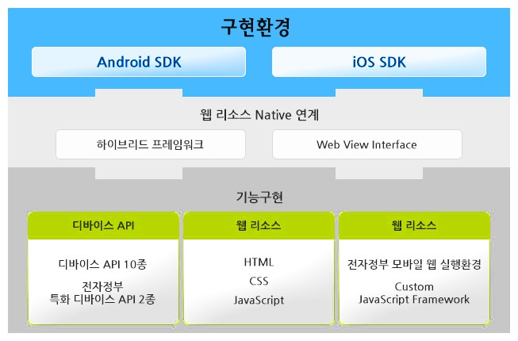

모바일 디바이스 API 실행환경 아키텍처구성
모바일 디바이스 API는 각 플랫폼(Android, iOS) 별 구현환경 위에서 HTML, CSS, JavaScript 로 구성된웹 리소스를 통한 디바이스 하이브리드 어플리케이션 구현을 지원하며 플랫폼 별 SDK를 활용하여 구현된 웹 리소스 내의 JavaScript 형태의 Device API와 각 플랫폼 별 Native Code 가 하이브리드 프레임워크 및 웹 뷰 인터페이스를 통해 연동되어 실제 디바이스의 고유 기능을 호출할 수 있도록 지원한다.

SDK
모바일 디바이스 API는 Android, iOS 두 가지의 모바일 플랫폼을 지원한다.
- Android
- Linux kernel
하드웨어 드라이버, 프로세스와 메모리 관리, 보안, 네트워크, 전력 관리 등의 핵심 서비스를 담당한다. - Libraries
MAndroid libc와 SSL 같은 다양한 C/C++ 코어 라이브러리로서 핸드폰에 사용되는 하드웨어를 지원하기 위해 컴파일되어 핸드폰 공급업체에 의해 핸드폰에 미리 설치된다. - Android Runtime
Core Libraries, Dalvik Virtual Machine으로 구성, 커널 위에 존재하며 Dalvik, VM, 코어 라이브러리 등이 포함된다. - Application Framework
Android Application을 만드는데 필요한 기능을 지원, App들을 관리하는 역할을 한다. - Application
안드로이드 아키텍처 다이어그램의 최상위 계층, 안드로이드의 특징 중 하나로 모든 어플리케이션이 동일한 수준으로 실행된다.
- iOS
- Kernel
Mac OS X와 같은 Mach에 기초한다. - Core OS와 Core Services 계층
기본적인 iOS의 인터페이스를 가지고 있다. 데이터 타입들, 봉주르 서비스, 네트워크 소켓 등이 있다. - Media 계층
2D/3D 그리고, 오디오, 비디오 등의 기반 기술을 가지고 있다.
OpenGL ES, Quartz Core Audio와 Core Animation이 있다. - Cocoa Touch 계층
모든 기술이 Objective-C를 기본으로 하며, 각종 프레임워크로 응용프로그램을 만들 때 가장 기본적인 인프라를 제공한다.
하이브리드 프레임워크
- 웹 리소스와 Native 모듈과의 연계를 위한 하이브리드 프레임워크로 PhoneGap을 사용한다.
- 오픈소스 하이브리드 프레임워크인 PhoneGap은 네이티브 플랫폼 종속적인 디바이스 API와 플랫폼 비종속적인 영역인 어플리케이션 부분으로 나누어 지며 웹 뷰 클라이언트를 이용해 어플리케이션을 구동시킨다.
하이브리드 어플리케이션 영역은 플랫폼에 비종속적인 언어인 HTML5, 자바스크립트, CSS로 구현 되며 앱 빌드시 컴파일 되지 않는다.
어플리케이션이 동작하면 디바이스 API의 웹뷰에 의해 인터프리팅 방식으로 랜더링 된다.
웹뷰 인터페이스
- 웹 리소스와 각 SDK 사이에서 인터페이스 역할을 수행한다. 웹 뷰 인터페이스는 각 디바이스 플랫폼에 내장 되어있는 Web Kit 기능을 통하여 수행된다.
- 각 플랫폼 별 SDK 내에 내장되어 있는 브라우저 기능을 포함 한 웹 Tool Kit 으로서 하이브리드 어플리케이션의 디바이스 API 호출을 위한 브릿지 역할을 해준다.
- SDK 로 부터 상속받은 웹뷰를 생성해서 그웹뷰에 내 소스를 로드한 후 네이티브API를 사용할 수 있도록 연계한다.
DEVICE API
- 모바일 하이브리드 어플리케이션 구현 시 모바일 디바이스 API 실행환경에서는 Javascript 객체를 이용하여, Device에 접근이 가능도록 다양한 API를 제공한다.
- 하이브리드 어플리케이션 동작 하기 위한 기반 구성요소로 네이티브 플랫폼에 종속적인 언어로 구성된다.
- HTML5와 자바스크립트 표준 코드 이외의 디바이스 종속 기능을 사용하기 위한 기능을 구현하며 사용자의 커스텀 라이브러리가 포함된다.
| 구분 | 기능 |
|---|---|
| Contacts | 디바이스의 연락처 데이터 베이스에 접근(연락처 만들기, 검색등등) |
| GPS | 디바이스 GPS센서에 접근 (현재 위치등등) |
| Accelerometer | 디바이스 모션 센서 접근(현재 가속도 정보등등) |
| Compass | 디바이스 포인팅 방향 정보 처리 |
| Camera | 디바이스의 기본 카메라 어플리케이션에 접근 |
| Vibrator | 영상 음성, 진동등을 통한 알림 제공. (alert, confirm, beep, vibrate 등을 발생함) |
| Media | 디바이스의 오디오 파일을 저장하고 기록할 수 있는 기능을 제공 |
| File Read Write | 파일 시스템 계층의 읽기, 쓰기, 탐색등의? 기능 제공 |
| Device | 디바이스 H/W S/W 정보에 접근 (디바이스명, 플랫폼버전등등) |
| Network | 디바이스의 네트워크 정보에 접근 |
| PKI | NPKI 모듈과의 연계기능을 제공 |
| Interface | 전자정부 표준프레임워크 웹 서버 어플리케이션 연계 기능 제공 |
웹 리소스
- 폰갭 프로젝트는 일반적인 웹 리소스 (HTML5, CSS3, JavaScript) 등을 활용하여 모바일 하이브리드 APP을 구현하며 해당 웹 리소스는 디바이스의 종류에 상관없이 재활용이 가능하다.
- HTML, CSS, Image, js 등의 파일을 추가할 수 있으며 디바이스의 종류에 관계없이 재활용이 가능하다.
- 전자정부 디바이스 API 실행환경 에서는 HTML5, CSS3을 적용한 웹 리소스 구현을 지원한다.
JavaScript Framework
- 전자정부 모바일 웹 실행환경
- jQuery
- iScroll
| 서비스그룹 | 서비스 | 오픈소스 | 확장 및 개발 |
|---|---|---|---|
| UX처리 | UI/UX 라이브러리 | jQuery Mobile 1.4 | |
| 디바이스 API 실행환경 | Mobile Hybrid Framework | PhoneGap 2.9.0 |